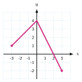
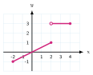
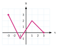
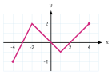
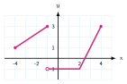
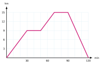
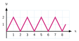
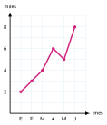

📝 Repaso de la unidad
Actividades de repaso
Escribe tu respuesta y después pulsa «Ver la solución» para corregirla tú. Los puntos dicen el nivel: ● básico, ●●● ampliación.
Indica si cada relación es una función:
- A cada número le asociamos su cuadrado.
- A cada número positivo le asociamos sus raíces cuadradas.
- A cada día del año le asociamos la temperatura máxima en Santander.
Solución
a) Sí b) No c) Sí
¿Cómo te ha ido?
Dada \(f(x) = x^2 - 3x\), calcula \(f(0)\), \(f(-2)\), \(f(3)\) y \(f\!\left(\frac{1}{2}\right)\).
Solución
\(0\); \(10\); \(0\); \(-\frac{5}{4}\)
¿Cómo te ha ido?
Dada \(f(x)=2x^2-x+3\), calcula \(f(0)\), \(f(1)\), \(f(-2)\) y \(f\!\left(\frac{1}{2}\right)\).
Solución
\(3\); \(4\); \(13\); \(3\)
¿Cómo te ha ido?
Dada \(g(x)=\dfrac{x+1}{x-2}\), calcula:
- \(g(0)\)
- \(g(3)\)
- \(g(-1)\)
- \(g(2)\)
Solución
a) \(-\frac{1}{2}\) b) \(4\) c) \(0\) d) No existe.
¿Cómo te ha ido?
La función \(f(x) = 2x + 1\) está dada por su fórmula. Exprésala con una tabla para \(x = -2, -1, 0, 1, 2\) y con un enunciado.
Solución
Valores: \(-3\), \(-1\), \(1\), \(3\), \(5\). A cada número le corresponde su doble más uno.
¿Cómo te ha ido?
Dada \(f(x) = 3x - 4\):
- Calcula \(f(2)\) y \(f(-1)\).
- ¿Para qué valor de \(x\) se cumple \(f(x) = 11\)? ¿Y \(f(x) = 0\)?
Solución
a) \(2\) y \(-7\) b) \(x = 5\); \(x = \frac{4}{3}\)
¿Cómo te ha ido?
Indica si cada tabla define \(y\) como función de \(x\):
\(x\) 1 2 3 4 \(y\) 5 5 7 9 \(x\) 1 1 2 3 \(y\) 2 4 6 8 \(x\) \(-2\) \(-1\) 1 2 \(y\) 4 1 1 4
Solución
a) Sí b) No: \(x = 1\) tiene dos valores. c) Sí
¿Cómo te ha ido?
Indica en cada caso cuál es la variable independiente y cuál la dependiente:
- El precio de una compra de naranjas y los kilos comprados.
- La altura de una vela encendida y el tiempo que lleva encendida.
- El área de un círculo y su radio.
Solución
a) Independiente: kilos; dependiente: precio. b) Independiente: tiempo; dependiente: altura. c) Independiente: radio; dependiente: área.
¿Cómo te ha ido?
Dada \(f(x) = -x^2 + 4x - 1\), calcula \(f(0)\), \(f(2)\), \(f(-1)\) y \(f(3)\).
Solución
\(-1\); \(3\); \(-6\); \(2\)
¿Cómo te ha ido?
Un taxi cobra \(3\) € de bajada de bandera y \(1,20\) € por kilómetro. Escribe la fórmula del precio, haz una tabla para 0, 4, 8 y 12 km y represéntala. ¿Cuántos kilómetros podemos recorrer con \(21\) €?
Solución
\(f(x) = 3 + 1,2x\). Tabla: \(3\); \(7,80\); \(12,60\); \(17,40\) €. Con \(21\) €, \(15\) km.
¿Cómo te ha ido?
Indica si es verdadero o falso y justifícalo con un dibujo.
Marca V (verdadero) o F (falso). Después justifica tu respuesta.
Solución
a) Falso b) Verdadero c) Falso
¿Cómo te ha ido?
Dada \(f(x) = x^2 - 1\):
- Calcula \(f(3)\) y \(f(-3)\).
- ¿Qué valores de \(x\) tienen imagen \(15\)? ¿Y imagen \(-1\)? ¿Hay alguno con imagen \(-5\)?
Solución
a) \(8\) y \(8\) b) \(x = 4\) y \(x = -4\); \(x = 0\); no.
¿Cómo te ha ido?
Un fontanero cobra \(25\) € por el desplazamiento y \(18\) € por cada hora de trabajo. Escribe la fórmula del precio en función de las horas, haz una tabla para 1, 2, 3 y 4 horas y represéntala. Si una factura es de \(106\) €, ¿cuántas horas ha trabajado?
Solución
\(f(x) = 25 + 18x\). Tabla: \(43\), \(61\), \(79\) y \(97\) €. Con \(106\) €, \(4{,}5\) horas.
¿Cómo te ha ido?
- ¿Puede la gráfica de una función cortar dos veces al eje \(Y\)? ¿Y al eje \(X\)?
- ¿Puede una función ser creciente en todo su dominio y tener un máximo relativo?
- ¿Puede una función periódica ser creciente en todo su dominio?
Solución
a) Al eje \(Y\), no; al eje \(X\), sí. b) No c) No
¿Cómo te ha ido?
Con una cartulina cuadrada de \(20\) cm de lado se construye una caja sin tapa: se corta un cuadrado de lado \(x\) en cada esquina y se doblan los bordes.
- Escribe el volumen \(V(x)\) de la caja.
- Calcula \(V(2)\) y \(V(5)\).
- ¿Qué valores puede tomar \(x\)?
Solución
a) \(V(x) = x(20 - 2x)^2\) b) \(512\) cm³ y \(500\) cm³ c) \(0 < x < 10\)
¿Cómo te ha ido?
- \(f(x)=x^2-4\)
- \(f(x)=\dfrac{1}{x+2}\)
- \(f(x)=\sqrt{6-2x}\)
- \(f(x)=\dfrac{5}{x^2-9}\)
Solución
a) todos los números reales b) todos menos \(-2\) c) \(x\leq 3\) d) todos menos \(3\) y \(-3\)
¿Cómo te ha ido?
- \(f(x) = 3x^2 - x\)
- \(f(x) = \dfrac{2}{x - 5}\)
- \(f(x) = \sqrt{x + 4}\)
- \(f(x) = \dfrac{x}{x + 1}\)
Solución
a) todos los números reales b) todos menos el \(5\) c) \(x \geq -4\) d) todos menos el \(-1\)
¿Cómo te ha ido?

Indica el dominio y el recorrido de la función de la gráfica.
Solución
Dominio \([-3, 3]\); recorrido \([-2, 4]\).
¿Cómo te ha ido?
- \(f(x) = 2x - 1\)
- \(f(x) = \dfrac{1}{x - 3}\)
- \(f(x) = \sqrt{x - 2}\)
- El área de un cuadrado en función de su lado.
Solución
a) todos los números reales b) todos menos el \(3\) c) \(x \geq 2\) d) \(x > 0\)
¿Cómo te ha ido?
La batería de un móvil está al 100% a las 8:00 y pierde un 6% cada hora.
- Escribe la fórmula de la carga en función de las horas transcurridas.
- ¿A qué hora le quedará un 10%?
- ¿Cuál es el dominio de la función? ¿Y su recorrido?
Solución
a) \(B(t) = 100 - 6t\) b) A las 23:00 c) Dominio \(\left[0, \frac{50}{3}\right]\); recorrido \([0, 100]\)
¿Cómo te ha ido?
Un depósito tiene 200 litros de agua y se llena con un grifo que echa 15 litros por minuto. Su capacidad es de 650 litros.
- Escribe la fórmula del volumen en función del tiempo.
- ¿Cuánto tarda en llenarse? Indica el dominio y el recorrido.
Solución
a) \(V(t) = 200 + 15t\) b) 30 minutos. Dominio \([0, 30]\); recorrido \([200, 650]\).
¿Cómo te ha ido?
- \(f(x) = \sqrt{10 - 5x}\)
- \(f(x) = \dfrac{3}{x^2 - 4x}\)
- \(f(x) = \dfrac{1}{\sqrt{x - 1}}\)
- \(f(x) = \sqrt{x^2 + 1}\)
Solución
a) \(x \leq 2\) b) todos menos \(0\) y \(4\) c) \(x > 1\) d) todos los números reales
¿Cómo te ha ido?
Haz una tabla de valores, representa cada función y halla su recorrido:
- \(f(x) = x^2\)
- \(f(x) = x^2 + 3\)
- \(f(x) = 2 - x^2\)
- \(f(x) = \sqrt{x}\)
Solución
a) \(y \geq 0\) b) \(y \geq 3\) c) \(y \leq 2\) d) \(y \geq 0\)
¿Cómo te ha ido?
Un globo aerostático está a \(1\,200\) m de altura y empieza a descender a \(40\) m por minuto hasta llegar al suelo.
- Escribe la altura en función del tiempo. ¿A qué altura está a los \(12\) minutos?
- Indica el dominio y el recorrido de la función.
Solución
a) \(H(t) = 1\,200 - 40t\); \(720\) m b) Dominio \([0, 30]\); recorrido \([0, 1\,200]\)
¿Cómo te ha ido?
Indica qué valores tiene sentido que tome la variable independiente:
- El precio de \(x\) entradas a \(7\) € cada una, en una sala de cine de \(120\) butacas.
- El perímetro de un cuadrado en función de su lado.
- La altura de una pelota lanzada hacia arriba, que cae al suelo a los \(3\) segundos.
Solución
a) Los números naturales del \(0\) al \(120\) b) \(x > 0\) c) \([0, 3]\)
¿Cómo te ha ido?
Un depósito de \(500\) L se vacía a razón de \(20\) L por minuto. Escribe la fórmula del volumen en función del tiempo. ¿Cuál es su dominio? ¿Cuándo se vacía por completo?
Solución
\(V(t) = 500 - 20t\). Dominio \([0, 25]\). A los \(25\) minutos.
¿Cómo te ha ido?
Una excursión cuesta 400 € de autobús, que se reparten entre los \(x\) alumnos que van, más 15 € por alumno de la entrada al parque. El autobús tiene 55 plazas.
- Escribe la función que da el precio por alumno. ¿Cuál es su dominio?
- ¿Cuánto paga cada uno si van 20 alumnos? ¿Y si van 40?
- ¿Es creciente o decreciente? ¿Puede costar 20 € por alumno?
Solución
a) \(P(x) = \frac{400}{x} + 15\), \(x = 1, \ldots, 55\) b) 35 € y 25 € c) Decreciente. No.
¿Cómo te ha ido?
Con \(40\) m de valla se quiere cercar un huerto rectangular pegado a un muro, que hace de cuarto lado. Llamamos \(x\) a cada uno de los dos lados perpendiculares al muro.
- Escribe el área \(A(x)\) del huerto. ¿Cuál es su dominio?
- Calcula \(A(5)\), \(A(10)\) y \(A(15)\). ¿Para qué valor de \(x\) es máxima el área? ¿Cuál es el recorrido?
Solución
a) \(A(x) = x(40 - 2x)\); dominio \((0, 20)\) b) \(150\), \(200\) y \(150\) m²; máxima para \(x = 10\) m; recorrido \((0, 200]\)
¿Cómo te ha ido?
Escribe la fórmula de una función cuyo dominio sea:
- Todos los números menos el \(4\).
- Los números mayores o iguales que \(5\).
- Todos los números menos el \(1\) y el \(-1\).
Solución
Respuesta abierta. Por ejemplo: a) \(\frac{1}{x - 4}\) b) \(\sqrt{x - 5}\) c) \(\frac{1}{x^2 - 1}\)
¿Cómo te ha ido?
Indica si cada función es continua o discontinua y explica por qué.
- La temperatura del aire a lo largo de un día.
- El número de personas que hay en un aula a lo largo de la mañana.
- La estatura de una persona a lo largo de su vida.
Solución
a) Continua b) Discontinua c) Continua
¿Cómo te ha ido?
Indica si cada función es continua o discontinua:
- La altura de un avión a lo largo de un vuelo.
- El precio de una llamada que se cobra por minuto o fracción, según su duración.
- La distancia recorrida por una corredora durante un maratón.
- El número de alumnos matriculados en un colegio a lo largo de un curso.
Solución
a) Continua b) Discontinua c) Continua d) Discontinua
¿Cómo te ha ido?

¿Es continua la función? Si no lo es, ¿en qué punto da un salto? ¿Cuánto vale \(f(2)\)?
Solución
No; salta en \(x = 2\), de \(y = 1\) a \(y = 3\). \(f(2) = 1\).
¿Cómo te ha ido?
Un aparcamiento cobra \(2\) € la primera hora o fracción y \(1,50\) € cada hora o fracción siguiente, con un máximo de 4 horas. ¿Cuánto se paga por 30 minutos? ¿Y por 2 horas y cuarto? Dibuja la gráfica. ¿Es continua?
Solución
\(2\) €; \(5\) €. No es continua.
¿Cómo te ha ido?
Un aparcamiento cobra 2 € la primera hora (o fracción) y \(1{,}50\) € cada hora (o fracción) adicional, con un máximo de 12 € al día.
- ¿Cuánto se paga por 30 minutos? ¿Y por 2 h 10 min?
- Dibuja la gráfica para las primeras 10 horas. ¿Es una función continua?
- ¿A partir de cuántas horas se paga el máximo?
Solución
a) 2 €; 5 € b) Escalonada; no es continua. c) Cuando se superan las 7 horas.
¿Cómo te ha ido?
Enviar una carta cuesta \(0{,}85\) € si pesa hasta 20 g, \(1{,}25\) € si pesa más de 20 g y hasta 50 g, y \(1{,}80\) € si pesa más de 50 g y hasta 100 g.
- ¿Cuánto cuesta enviar una carta de 35 g? ¿Y una de 50 g?
- Representa la función. ¿Qué tipo de gráfica es? ¿Dónde es discontinua?
Solución
a) \(1{,}25\) € las dos b) Escalonada; discontinua en 20 g y en 50 g.
¿Cómo te ha ido?
Dada \(f(x) = \dfrac{1}{x - 1}\):
- ¿Se puede calcular \(f(1)\)?
- Calcula \(f(0{,}9)\), \(f(0{,}99)\), \(f(1{,}01)\) y \(f(1{,}1)\).
- ¿Es continua en \(x = 1\)? ¿Qué le pasa a la gráfica cerca de ese valor?
Solución
a) No b) \(-10\); \(-100\); \(100\); \(10\) c) No: a la izquierda baja muchísimo y a la derecha sube muchísimo.
¿Cómo te ha ido?
Un servicio de alquiler de bicicletas cobra \(3\) € por la primera media hora o fracción y \(2\) € por cada media hora o fracción más.
- ¿Cuánto se paga por \(20\) minutos? ¿Y por \(1\) hora? ¿Y por \(1\) hora y \(40\) minutos?
- Dibuja la gráfica de las dos primeras horas. ¿Dónde es discontinua?
Solución
a) \(3\) €; \(5\) €; \(9\) € b) Escalonada; discontinua en \(30\), \(60\) y \(90\) minutos.
¿Cómo te ha ido?
El depósito de gasóleo de una casa tiene \(800\) L el 1 de noviembre. Se gastan \(20\) L al día y, cuando quedan \(200\) L, se rellena de golpe hasta \(800\) L.
- ¿Cuántos días pasan hasta el primer rellenado?
- Dibuja la gráfica de los litros durante los primeros \(60\) días. ¿Es continua?
- ¿Es una función periódica?
Solución
a) \(30\) días b) No: da un salto los días \(30\) y \(60\). c) Sí, de periodo \(30\) días.
¿Cómo te ha ido?
Dibuja la gráfica de una función con dominio \([0, 6]\) que sea constante en cada tramo y discontinua solo en \(x = 2\) y en \(x = 4\).
Solución
Respuesta abierta. Por ejemplo, \(y = 1\) en \([0, 2)\), \(y = 3\) en \([2, 4)\) e \(y = 2\) en \([4, 6]\).
¿Cómo te ha ido?
Una copistería cobra \(0{,}10\) € por copia si se hacen hasta \(50\) copias; si se hacen más de \(50\), todas las copias salen a \(0{,}08\) €.
- ¿Cuánto cuestan \(50\) copias? ¿Y \(51\)? ¿Y \(55\)?
- ¿Es continua la función? ¿Tiene sentido unir los puntos de la gráfica?
Solución
a) \(5\) €; \(4{,}08\) €; \(4{,}40\) € b) No: solo toma valores naturales y además da un salto entre \(50\) y \(51\); no se unen los puntos.
¿Cómo te ha ido?
La función \(f\) asocia a cada número su redondeo a las unidades (los que acaban en \(0{,}5\) se redondean hacia arriba).
- Calcula \(f(2{,}3)\), \(f(2{,}5)\), \(f(-1{,}2)\) y \(f(3{,}49)\).
- Dibuja su gráfica entre \(-2\) y \(3\). ¿En qué puntos es discontinua?
Solución
a) \(2\); \(3\); \(-1\); \(3\) b) Escalonada; discontinua en \(-1{,}5\), \(-0{,}5\), \(0{,}5\), \(1{,}5\) y \(2{,}5\).
¿Cómo te ha ido?
Indica si es verdadero o falso y justifícalo.
Marca V (verdadero) o F (falso). Después justifica tu respuesta.
Solución
a) Falso: la tabla solo muestra algunos valores. b) Verdadero: pasa de estar debajo a estar encima del eje sin levantar el lápiz. c) Falso: no existe en \(x = 0\).
¿Cómo te ha ido?
Asocia cada situación con su gráfica: i) periódica, ii) decreciente que se estabiliza, iii) creciente, iv) escalonada.
- La altura de una planta a lo largo de un mes.
- La altura de un columpio en movimiento.
- La temperatura de un café recién servido.
- El precio de un aparcamiento que cobra por horas.
Solución
a) iii) b) i) c) ii) d) iv)
¿Cómo te ha ido?

Indica dónde crece y dónde decrece la función, sus máximos y mínimos relativos y sus máximos y mínimos absolutos.
Solución
Crece en \((-1, 1)\); decrece en \((-3, -1)\) y \((1, 3)\). Mínimo relativo \((-1, -1)\); máximo relativo \((1, 2)\). Máximo absoluto \(3\) (en \(x = -3\)); mínimo absoluto \(-1\) (en \(x = -1\)).
¿Cómo te ha ido?

Indica su dominio y recorrido, los intervalos de crecimiento y decrecimiento, los máximos y mínimos relativos y los puntos de corte con los ejes.
Solución
Dominio \([-4, 4]\); recorrido \([-2, 2]\). Crece en \((-4, -2)\) y \((1, 4)\); decrece en \((-2, 1)\). Máximo relativo en \((-2, 2)\); mínimo relativo en \((1, -1)\). Corta al eje \(X\) en \(x = -3\), \(x = 0\) y \(x = 2\), y al eje \(Y\) en \((0, 0)\).
¿Cómo te ha ido?

Indica su dominio y recorrido, si es continua, dónde crece, decrece o es constante, y sus puntos de corte con los ejes.
Solución
Dominio \([-4, 4]\); recorrido \([-1, 3]\). Es discontinua en \(x = -1\) (da un salto). Crece en \((-4, -1)\) y \((2, 4)\); es constante en \((-1, 2)\). Corta al eje \(Y\) en \((0, -1)\) y al eje \(X\) en \((2{,}5;\ 0)\).
¿Cómo te ha ido?
Ana sale de casa y camina 10 minutos hasta una tienda que está a 800 m. Está en la tienda 15 minutos y vuelve a casa en 20 minutos. Dibuja la gráfica de la distancia a su casa en función del tiempo y describe su crecimiento.
Solución
Crece en \((0, 10)\), es constante en \((10, 25)\) y decrece en \((25, 45)\). Dominio \([0, 45]\); recorrido \([0, 800]\).
¿Cómo te ha ido?
La tabla recoge la temperatura de un día de verano:
| hora | 0 | 3 | 6 | 9 | 12 | 15 | 18 | 21 | 24 |
| ºC | 10 | 8 | 7 | 10 | 15 | 18 | 16 | 13 | 11 |
Represéntala uniendo los puntos e indica el máximo, el mínimo y cuándo crece la temperatura.
Solución
Máximo: \(18\) ºC a las 15:00; mínimo: \(7\) ºC a las 6:00. Crece de 6:00 a 15:00.
¿Cómo te ha ido?
Dibuja la gráfica de una función que cumpla todas estas condiciones: su dominio es \([0, 8]\); crece en \((0, 3)\) y en \((6, 8)\); decrece en \((3, 6)\); tiene un máximo relativo en \((3, 5)\) y un mínimo relativo en \((6, 1)\), y \(f(0) = 2\).
Solución
Respuesta abierta. Por ejemplo, la poligonal que une \((0, 2)\), \((3, 5)\), \((6, 1)\) y \((8, 4)\).
¿Cómo te ha ido?
Representa \(f(x)=x^3-3x\) en GeoGebra. Usa los comandos Extremo y Raíz para hallar sus máximos y mínimos relativos y sus cortes con el eje \(X\). Indica los intervalos de crecimiento y decrecimiento.
📐 Ábrelo en GeoGebra Prueba la actividad moviendo los puntos y los deslizadores.
Solución
Máximo relativo: \((-1, 2)\); mínimo relativo: \((1, -2)\). Cortes: \(x=0\), \(x=\pm\sqrt{3}\). Crece en \((-\infty,-1)\) y \((1,+\infty)\); decrece en \((-1,1)\).
¿Cómo te ha ido?
Representa en GeoGebra la función \(f(x) = \dfrac{4}{x^2 + 1}\).
- ¿Tiene máximos o mínimos? ¿Corta al eje \(X\)?
- ¿Cuál es su recorrido?
- ¿Qué le ocurre a la función cuando \(x\) se hace muy grande?
📐 Ábrelo en GeoGebra Prueba la actividad moviendo los puntos y los deslizadores.
Solución
a) Máximo en \((0, 4)\); no corta al eje \(X\). b) \((0, 4]\) c) Se acerca a 0.
¿Cómo te ha ido?
Lee el texto y observa la gráfica. Después contesta.
El sábado, Pablo hizo una ruta en bicicleta y la registró con su reloj GPS. La gráfica muestra la distancia a la que estaba de su casa, en kilómetros, en función del tiempo, en minutos. Paró dos veces: la primera para esperar a un amigo y la segunda, en lo alto de un puerto, para comer algo. Después volvió a casa por el mismo camino, todo cuesta abajo.

- ¿A qué distancia máxima de su casa llegó? ¿Cuánto tiempo duró la ruta?
- ¿En qué intervalos estuvo parado? ¿Cómo se ve en la gráfica?
- ¿A qué velocidad fue en el primer tramo? ¿Y en la vuelta? Exprésalas en km/h.
- ¿Cuántos kilómetros recorrió en total?
Solución
a) 15 km; 120 minutos b) De 30 a 50 y de 70 a 90 minutos c) 18 km/h; vuelta: 30 km/h d) 30 km
¿Cómo te ha ido?
Haz una tabla de valores de \(f(x) = x^2 - 6x + 5\) para \(x = 0, 1, \ldots, 6\) y represéntala. Indica dónde crece, dónde decrece y su mínimo.
Solución
Valores: \(5, 0, -3, -4, -3, 0, 5\). Decrece en \((0, 3)\), crece en \((3, 6)\); mínimo en \((3, -4)\).
¿Cómo te ha ido?
Un dron despega y sube hasta \(50\) m en \(2\) minutos; se queda quieto \(3\) minutos; baja hasta \(20\) m en \(1\) minuto; sube hasta \(60\) m en \(2\) minutos y aterriza en \(4\) minutos más. Dibuja la gráfica de su altura e indica los intervalos de crecimiento y decrecimiento, los máximos y mínimos relativos y el máximo absoluto.
Solución
Crece en \((0, 2)\) y \((6, 8)\); constante en \((2, 5)\); decrece en \((5, 6)\) y \((8, 12)\). Mínimo relativo \((6, 20)\); máximo relativo y absoluto \((8, 60)\).
¿Cómo te ha ido?
Los rectángulos de perímetro 20 cm tienen distintas áreas.
- Escribe el área \(A(x)\) en función de la base \(x\). ¿Cuál es su dominio?
- Haz una tabla y representa la función. ¿Para qué base el área es máxima? ¿Cuánto vale?
Solución
a) \(A(x)=x(10-x)\); dominio \((0, 10)\) b) \(x=5\): 25 cm²
¿Cómo te ha ido?
Busca todos los rectángulos de perímetro \(20\) cm cuyos lados midan un número entero de centímetros. Haz una tabla con la base \(x\) y el área, y represéntala. ¿Para qué base es máxima el área? ¿Qué forma tiene ese rectángulo?
Solución
Áreas: \(9, 16, 21, 24, 25, 24, 21, 16, 9\). Máxima para \(x = 5\): un cuadrado.
¿Cómo te ha ido?
Una función cumple \(f(0) = 2\) y \(f(x + 1) = f(x) + 3\) para cualquier \(x\).
- Calcula \(f(1)\), \(f(2)\), \(f(3)\) y \(f(5)\).
- Encuentra una fórmula para \(f(x)\).
Solución
a) 5, 8, 11 y 17. b) \(f(x) = 3x + 2\).
¿Cómo te ha ido?
Las funciones \(f\) y \(g\) son crecientes en todos los números reales.
- ¿Es creciente \(f + g\)? Justifícalo.
- ¿Tiene que ser creciente \(f - g\)? Busca un ejemplo.
Solución
a) Sí: si \(x\) aumenta, aumentan los dos sumandos. b) No: con \(f(x) = x\) y \(g(x) = 2x\), \(f(x) - g(x) = -x\) es decreciente.
¿Cómo te ha ido?
Halla los puntos de corte con los ejes:
- \(f(x)=2x-6\)
- \(f(x)=x^2-9\)
- \(f(x)=x^2+2x\)
- \(f(x)=(x-1)(x+4)\)
Solución
a) \((3,0)\), \((0,-6)\) b) \((-3,0)\), \((3,0)\), \((0,-9)\) c) \((0,0)\), \((-2,0)\) d) \((1,0)\), \((-4,0)\), \((0,-4)\)
¿Cómo te ha ido?
Halla los puntos de corte con los ejes:
- \(f(x) = 5x - 10\)
- \(f(x) = -2x + 8\)
- \(f(x) = x^2 - 16\)
- \(f(x) = 4\)
Solución
a) \((0, -10)\), \((2, 0)\) b) \((0, 8)\), \((4, 0)\) c) \((0, -16)\), \((-4, 0)\), \((4, 0)\) d) \((0, 4)\); no corta al eje \(X\)
¿Cómo te ha ido?
La gráfica de una función pasa por los puntos de esta tabla:
| \(x\) | \(-3\) | \(-1\) | 0 | 2 | 4 |
| \(y\) | 0 | 4 | 3 | 0 | \(-5\) |
¿Qué puntos de corte con los ejes conoces?
Solución
Con el eje \(X\): \((-3, 0)\) y \((2, 0)\); con el eje \(Y\): \((0, 3)\).
¿Cómo te ha ido?
Halla los puntos de corte con los ejes:
- \(f(x) = x^2 - x\)
- \(f(x) = (x + 3)(x - 5)\)
- \(f(x) = 3x^2 - 12\)
Solución
a) \((0, 0)\), \((1, 0)\) b) \((0, -15)\), \((-3, 0)\), \((5, 0)\) c) \((0, -12)\), \((-2, 0)\), \((2, 0)\)
¿Cómo te ha ido?
Halla los puntos de corte con los ejes:
- \(f(x) = 3x + 12\)
- \(f(x) = x^2 - 5x\)
- \(f(x) = x^2 + 1\)
Solución
a) \((0, 12)\), \((-4, 0)\) b) \((0, 0)\), \((5, 0)\) c) \((0, 1)\); no corta al eje \(X\)
¿Cómo te ha ido?
Halla los puntos de corte con los ejes:
- \(f(x) = x^2 - 4x + 3\)
- \(g(x) = \dfrac{x + 2}{x - 1}\)
Solución
a) \((1, 0)\), \((3, 0)\) y \((0, 3)\) b) \((-2, 0)\) y \((0, -2)\)
¿Cómo te ha ido?
Escribe los números del \(-4\) al 4 en A1:A9 y en B1 la fórmula =A1^2-A1-6. Arrastra y crea un gráfico de dispersión con líneas.
- ¿Dónde corta la gráfica al eje \(X\)? ¿Y al eje \(Y\)?
- Las columnas dan \(-6\) para \(x = 0\) y para \(x = 1\). ¿Dónde crees que está el mínimo? Compruébalo escribiendo \(0{,}5\) en una celda.
Solución
a) \(x = -2\) y \(x = 3\); \((0, -6)\) b) \(x = 0{,}5\); mínimo \((0{,}5;\ -6{,}25)\)
¿Cómo te ha ido?
Halla los puntos de corte con los ejes:
- \(f(x) = x^2 + x - 6\)
- \(f(x) = x^2 - 6x + 9\)
- \(f(x) = 2x^2 + 3x + 5\)
Solución
a) \((0, -6)\), \((-3, 0)\), \((2, 0)\) b) \((0, 9)\), \((3, 0)\) c) \((0, 5)\); no corta al eje \(X\)
¿Cómo te ha ido?
Halla los puntos de corte con los ejes:
- \(f(x) = \dfrac{x - 4}{x + 2}\)
- \(f(x) = \dfrac{x^2 - 1}{x + 3}\)
Solución
a) \((4, 0)\), \((0, -2)\) b) \((-1, 0)\), \((1, 0)\), \(\left(0, -\frac{1}{3}\right)\)
¿Cómo te ha ido?
Halla los puntos de corte con los ejes:
- \(f(x) = \sqrt{x + 9} - 2\)
- \(f(x) = x^3 - 4x\)
Solución
a) \((0, 1)\), \((-5, 0)\) b) \((0, 0)\), \((-2, 0)\), \((2, 0)\)
¿Cómo te ha ido?
Se lanza una pelota hacia arriba y su altura, en metros, a los \(t\) segundos es \(h(t) = 20t - 5t^2\).
- ¿Cuándo vuelve a tocar el suelo?
- Calcula \(h(1)\), \(h(2)\) y \(h(3)\). ¿Cuál es la altura máxima?
Solución
a) A los \(4\) s b) \(15\) m, \(20\) m y \(15\) m; altura máxima \(20\) m (a los \(2\) s)
¿Cómo te ha ido?
El beneficio de una empresa, en miles de euros, es \(B(x) = -x^2 + 12x - 20\), donde \(x\) son los miles de unidades vendidas.
- Halla los puntos de corte con los ejes.
- ¿Qué significa el corte con el eje \(Y\)? ¿Entre qué ventas obtiene beneficios?
Solución
a) \((0, -20)\), \((2, 0)\) y \((10, 0)\) b) Si no vende, pierde \(20\,000\) €. Gana dinero entre \(2\,000\) y \(10\,000\) unidades.
¿Cómo te ha ido?
Encuentra una función de la forma \(f(x) = x^2 + bx + c\) que corte al eje \(X\) en \(x = 1\) y en \(x = 5\). ¿Dónde corta al eje \(Y\)?
Solución
\(f(x) = (x - 1)(x - 5) = x^2 - 6x + 5\); corta al eje \(Y\) en \((0, 5)\).
¿Cómo te ha ido?
En GeoGebra, crea un deslizador \(k\) entre \(-5\) y \(5\) y representa \(f(x) = x^2 + 2x + k\). Mueve el deslizador.
- ¿Para qué valores de \(k\) corta la gráfica al eje \(X\) en dos puntos? ¿En uno? ¿En ninguno?
- ¿Dónde corta al eje \(Y\)?
📐 Ábrelo en GeoGebra Prueba la actividad moviendo los puntos y los deslizadores.
Solución
a) Dos puntos si \(k < 1\); uno si \(k = 1\); ninguno si \(k > 1\). b) En \((0, k)\).
¿Cómo te ha ido?
Indica cuáles de estas funciones son periódicas y, en ese caso, su periodo:
- La posición de la aguja de los minutos de un reloj a lo largo de un día.
- La estatura de una persona a lo largo de su vida.
- Las horas de luz de cada día a lo largo de varios años.
- El dinero de una hucha en la que metes \(1\) € cada día.
Solución
a) Sí, \(60\) minutos b) No c) Sí, un año d) No
¿Cómo te ha ido?

La gráfica sigue igual indefinidamente. ¿Cuál es su periodo? Calcula \(f(1)\), \(f(4)\), \(f(13)\) y \(f(20)\).
Solución
Periodo \(2\). \(f(1) = 2\); \(f(4) = 0\); \(f(13) = 2\); \(f(20) = 0\).
¿Cómo te ha ido?
Una noria tarda \(8\) minutos en dar una vuelta completa. Una cabina está abajo del todo a las 17:00.
- ¿A qué horas vuelve a estar abajo antes de las 17:30?
- ¿Estará abajo a las 17:40? ¿Dónde estará a las 17:44?
Solución
a) 17:08, 17:16 y 17:24 b) Sí; arriba del todo (media vuelta).
¿Cómo te ha ido?
En Santander hay pleamar hoy a las 6:10. Si el periodo de las mareas es de unas 12 horas y 25 minutos, ¿a qué hora serán las dos pleamares siguientes?
Solución
A las 18:35 de hoy y a las 7:00 de mañana.
¿Cómo te ha ido?
La luz de un faro está encendida 2 segundos y apagada 3 segundos, y se repite siempre igual.
- ¿Cuál es el periodo?
- Si se enciende en el segundo 0, ¿estará encendida en el segundo 23? ¿Y en el 41?
- ¿Cuántos destellos da en un minuto?
Solución
a) 5 segundos b) En el 23, apagada; en el 41, encendida. c) 12 destellos
¿Cómo te ha ido?
Una función periódica de periodo \(4\) cumple \(f(0) = 1\), \(f(1) = 3\), \(f(2) = 2\) y \(f(3) = 0\). Calcula \(f(4)\), \(f(6)\), \(f(11)\), \(f(25)\) y \(f(-1)\).
Solución
\(f(4) = 1\); \(f(6) = 2\); \(f(11) = 0\); \(f(25) = 3\); \(f(-1) = 0\)
¿Cómo te ha ido?
Un semáforo se pone en verde en el segundo \(0\) y está verde \(40\) segundos, ámbar \(5\) segundos y rojo \(30\) segundos; después vuelve a empezar.
- ¿Cuál es el periodo?
- ¿De qué color está en el segundo \(100\)? ¿Y en el \(194\)? ¿Y en el \(290\)?
- ¿Cuántas veces se pone en verde en una hora?
Solución
a) \(75\) s b) Verde; ámbar; rojo c) \(48\) veces
¿Cómo te ha ido?
Un día, en Laredo, hay pleamar a las 3:15 y la bajamar siguiente es a las 9:27.
- Si la bajamar llega a mitad del periodo, ¿cuál es el periodo de la marea?
- ¿A qué hora será la siguiente pleamar?
Solución
a) \(12\) h \(24\) min b) A las 15:39
¿Cómo te ha ido?
Una función periódica de periodo \(3\) vale \(0\) en el intervalo \([0, 1]\) y sube en línea recta de \(0\) a \(2\) en el intervalo \((1, 3)\); en \(x = 3\) vuelve a valer \(0\).
- Dibuja su gráfica en \([0, 9]\).
- ¿Es continua? Calcula \(f(7{,}5)\).
Solución
a) Diente de sierra con tramos planos. b) No: salta en \(x = 3\), \(6\) y \(9\). \(f(7{,}5) = 0{,}5\).
¿Cómo te ha ido?
En reposo, el corazón de Lucía late \(72\) veces por minuto, siempre con el mismo ritmo.
- ¿Cuál es el periodo del latido, en segundos?
- Después de correr, el periodo baja a \(0{,}5\) s. ¿Cuántas pulsaciones por minuto tiene?
Solución
a) \(\frac{5}{6}\) s \(\approx 0{,}83\) s b) \(120\) pulsaciones por minuto
¿Cómo te ha ido?
Escribe los números del \(0\) al \(20\) en A1:A21 y en B1 la fórmula =RESIDUO(A1;4), que da el resto de dividir entre \(4\). Arrastra y haz un gráfico de dispersión.
- ¿Es una función periódica? ¿Cuál es su periodo?
- ¿Cuál es su recorrido? ¿Cuánto valdrá para \(x = 97\)?
Solución
a) Sí; periodo \(4\) b) \(\{0, 1, 2, 3\}\); \(1\)
¿Cómo te ha ido?
Las fases de la Luna se repiten cada \(29{,}5\) días, aproximadamente. Un año hubo luna llena el 2 de enero.
- ¿Cuándo fueron las dos lunas llenas siguientes?
- ¿Cuántas lunas llenas hubo ese año, de \(365\) días?
Solución
a) Hacia el 31 de enero o 1 de febrero, y el 3 de marzo b) \(13\)
¿Cómo te ha ido?
Una función es periódica de periodo \(6\).
- ¿Se repite también cada \(12\) unidades? ¿Y cada \(18\)?
- ¿Tiene que repetirse cada \(3\) unidades? Pon un ejemplo con una gráfica.
Solución
a) Sí, en los dos casos (son múltiplos de \(6\)). b) No; por ejemplo, una función que vale \(1\) en \([0, 3)\) y \(0\) en \([3, 6)\), repetida.
¿Cómo te ha ido?
La gráfica muestra los visitantes de un museo, en miles, durante el primer semestre.

- ¿En qué mes hubo más visitantes? ¿En cuál bajaron respecto al mes anterior?
- ¿Qué porcentaje aumentaron los visitantes de enero a junio?
Solución
a) Junio (\(8\,000\)); mayo b) Un \(300\%\)
¿Cómo te ha ido?
Indica qué error tiene cada gráfico y qué impresión equivocada puede dar:
- El eje vertical no indica qué se mide ni en qué unidades.
- En el eje horizontal aparecen, a la misma distancia, los años 2010, 2015, 2016, 2017 y 2020.
- El eje vertical de un gráfico de barras empieza en \(980\).
Solución
a) Ejes sin rótulos ni unidades: no se sabe qué se mide. b) Escala irregular: deforma los cambios. c) El eje no empieza en \(0\): exagera las diferencias.
¿Cómo te ha ido?
Un periódico publica un gráfico de barras con los votos de dos partidos: A obtiene el 52% y B el 48%. El eje vertical empieza en el 45% y la barra de A es más del doble de alta que la de B. El titular dice: «A arrasa a B». ¿Qué error tiene el gráfico? ¿Cuál es la diferencia real?
Solución
El eje no empieza en 0. Diferencia real: 4 puntos (\(\approx 1{,}08\) veces).
¿Cómo te ha ido?
El precio de un litro de gasolina pasa de \(1{,}60\) € a \(1{,}68\) €. Un gráfico de barras lo representa con el eje vertical desde \(1{,}58\) €.
- ¿Qué porcentaje ha subido el precio?
- ¿Cuántas veces más alta parece la segunda barra que la primera?
Solución
a) Un \(5\%\) b) \(5\) veces
¿Cómo te ha ido?
Una empresa muestra la cotización de sus acciones solo de marzo a junio, meses en los que pasó de \(20\) € a \(24\) €. En todo el año pasó de \(30\) € a \(22\) €.
- ¿Qué porcentaje subió en el tramo mostrado? ¿Qué porcentaje varió en todo el año?
- ¿Qué error tiene la gráfica?
Solución
a) Subió un \(20\%\); en el año bajó un \(26{,}7\%\). b) Intervalo de tiempo elegido a conveniencia.
¿Cómo te ha ido?
Dos periódicos representan el paro de un pueblo, que ha bajado de \(500\) a \(450\) personas. Uno usa un eje vertical de \(0\) a \(600\) y otro de \(440\) a \(510\). ¿En cuál parece mayor la bajada? ¿Qué porcentaje ha bajado realmente?
Solución
En el de \(440\) a \(510\). Ha bajado un \(10\%\).
¿Cómo te ha ido?
Lee el texto y contesta.
Un titular afirma: «Los accidentes de bicicleta se han triplicado en diez años». Debajo, un gráfico de barras muestra \(120\) accidentes en 2014 y \(150\) en 2024, con el eje vertical empezando en \(110\).
- ¿Qué porcentaje han aumentado realmente los accidentes?
- ¿Cuántas veces más alta se ve la barra de 2024?
- ¿Es correcto el titular?
Solución
a) Un \(25\%\) b) \(4\) veces c) No: no se han triplicado.
¿Cómo te ha ido?
Una gráfica muestra la población de un pueblo con los años 1980, 2000, 2010, 2015, 2020 y 2022 a la misma distancia en el eje horizontal. Los habitantes son \(2\,000\), \(2\,400\), \(2\,600\), \(2\,700\), \(2\,800\) y \(2\,840\).
- ¿Qué impresión da la gráfica sobre el ritmo de crecimiento?
- Calcula cuántos habitantes aumenta por año en cada tramo. ¿Qué ocurre en realidad?
Solución
a) Parece que el crecimiento se frena. b) \(20\) habitantes por año en todos los tramos: crece a ritmo constante.
¿Cómo te ha ido?
En una encuesta sobre el deporte favorito, un gráfico de sectores muestra: fútbol, \(45\%\); baloncesto, \(35\%\); natación, \(30\%\). Cada alumno elegía un único deporte. ¿Qué error tiene el gráfico?
Solución
Los porcentajes suman \(110\%\); con una sola respuesta por alumno deben sumar \(100\%\).
¿Cómo te ha ido?
Una empresa ha duplicado sus ventas y lo representa con dos dibujos de una bolsa: la segunda tiene el doble de alto y el doble de ancho que la primera. ¿Cuántas veces mayor parece la segunda bolsa? ¿Cómo debería haberse dibujado?
Solución
Parece \(4\) veces mayor (su área es \(4\) veces la primera). Debería tener el doble de área, o dibujar dos bolsas iguales.
¿Cómo te ha ido?
Lee el texto y contesta.
El ayuntamiento de una gran ciudad mide cada hora la concentración de dióxido de nitrógeno en el aire, en microgramos por metro cúbico. Si supera los 180 durante al menos dos horas seguidas, se activa un protocolo que limita el tráfico. Estos son los datos de un martes: a las 0 h, 40; a las 3 h, 30; a las 6 h, 60; a las 8 h, 190; a las 9 h, 200; a las 10 h, 170; a las 12 h, 120; a las 15 h, 110; a las 18 h, 185; a las 19 h, 195; a las 20 h, 186; a las 21 h, 150, y a las 24 h, 60.
- Representa los datos uniendo los puntos. ¿Cuándo se alcanzan el máximo y el mínimo?
- ¿En qué intervalos crece la concentración? ¿A qué crees que se debe?
- ¿Se activó el protocolo ese día? Justifícalo con los datos.
- Si los demás días laborables se repite un patrón parecido, ¿qué tipo de función sería a lo largo de una semana laboral?
Solución
a) Máximo: 9 h (200); mínimo: 3 h (30) b) De 3 a 9 h y de 15 a 19 h: horas punta de tráfico c) Sí (de 18 a 20 h) d) Periódica, de periodo un día
¿Cómo te ha ido?
Un anuncio muestra un gráfico de barras en el que la barra de un producto es el doble de alta que la de la competencia. Al leer el eje, ves que empieza en 90 y que los valores son \(95\) y \(100\). ¿Cuánto mayor es realmente el segundo valor, en porcentaje? ¿Por qué el gráfico engaña?
Solución
\(\approx 5,3\%\). El eje no empieza en 0.
¿Cómo te ha ido?
El club A ha pasado de \(200\) a \(300\) socios y el club B de \(2\,000\) a \(2\,200\). El club A dice que es el que más ha crecido y el B dice lo mismo. ¿Quién tiene razón? Calcula el aumento de cada uno en número de socios y en porcentaje.
Solución
A: \(+100\) socios, un \(50\%\); B: \(+200\) socios, un \(10\%\). Los dos, cada uno con una medida distinta.
¿Cómo te ha ido?
Las ventas anuales de una cafetería de 2021 a 2024 fueron \(410\), \(420\), \(425\) y \(440\) miles de euros. Dibuja dos gráficos con estos datos: uno que exagere la mejora y otro honesto. ¿Qué porcentaje han aumentado las ventas en total?
Solución
Exagera: eje vertical desde \(400\); honesto: eje desde \(0\). Aumento: \(\approx 7{,}3\%\).
¿Cómo te ha ido?
Lee el texto y contesta.
Una compañía eléctrica envía a un cliente un gráfico de barras con su consumo mensual en kWh: enero, \(320\); febrero, \(300\); marzo, \(260\); abril, \(220\); mayo, \(200\), y junio, \(210\). El eje vertical va de \(190\) a \(330\).
- ¿Qué porcentaje ha bajado el consumo de enero a mayo?
- En el gráfico, ¿cuántas veces más alta se ve la barra de enero que la de mayo?
- ¿Es un gráfico engañoso? ¿Cómo lo harías tú?
Solución
a) Un \(37{,}5\%\) b) \(13\) veces c) Sí; con el eje vertical desde \(0\).
¿Cómo te ha ido?
🧩 Paso a paso
Así se resuelven los ejercicios tipo de la unidad. Cada bloque es una orden, como en Scratch: los bloques se leen de arriba abajo y los que tienen forma de C se repiten o solo se hacen si se cumple la condición.